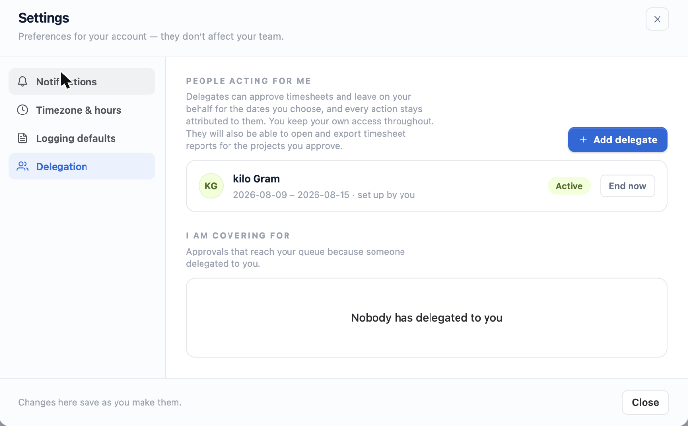

An approver going on leave leaves a queue behind them. Delegation lets someone else act in their place for a defined period, without handing over permissions permanently.
1. Why delegate rather than add an approver
Adding somebody as a permanent approver is easy to do and easy to forget to undo. A delegation has an end date, is visible to everyone involved, and every decision made under it records who actually clicked as well as whose queue it came from.
2. Setting up cover
- Open your delegation panel — from the Hub.
- Choose a delegate — anyone who can browse the relevant projects.
- Set the dates — start and end are both required, and a delegation may not run longer than 366 days.
- Optionally add a reason — useful for whoever reviews the audit trail later.
- Save — the delegate sees your queue from the start date.

3. What a delegate can do
Everything you could do as an approver, for the projects you approve: approve, reject with a comment, and act in bulk. Their decisions carry both names — theirs as the actor, yours as the person on whose behalf they acted.

4. What a delegate cannot do
- Approve their own time or leave, even through your delegation.
- Approve for projects you do not approve for. A delegation cannot grant more than the delegator has.
- Change project settings, add approvers, or delegate onward to somebody else.
5. Both of you can decide
A delegation is additive, not a handover. While it is running, you and your delegate can both act. If you check in from holiday and clear the queue yourself, nothing breaks.
6. Ending cover early
Revoke ends a delegation immediately. Decisions already made under it stand — they were validly made at the time, and the record says so.
7. Admin-arranged delegation
Site administrators can set up a delegation on someone else's behalf, for the case that matters most: an approver who is already away and did not arrange cover. The audit trail records who created the delegation as well as who used it.
Delegation can be switched off site-wide in Admin Settings without deleting anything, as an emergency control. With no delegations set up, the feature is already inert.